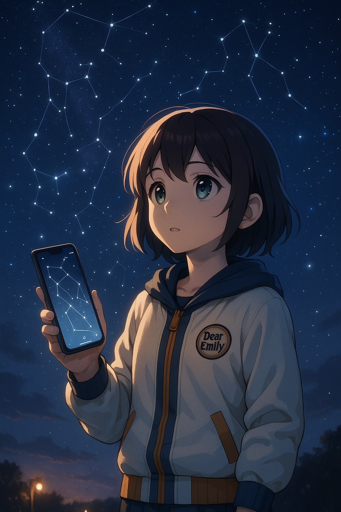

🌌【宙ガール入門①】星座ってなあに？ エミリーと夜空の散歩

エミリーはベランダに出て、夜空を見上げました。
きらきらと瞬く無数の星々。そのあまりの美しさに、思わず「わぁ…」と声が漏れます。
透き通るような紺碧のキャンバスに、ダイヤモンドを散りばめたような輝き。都会の喧騒から離れた夜空は、まるで息をのむような絶景を私たちに見せてくれます。
でも──
「この星、名前あるのかな？」
「星座って聞いたことあるけど、どれがどれだか分からないや」
そう感じたこと、あなたも一度は経験があるのではないでしょうか？
そんな“もったいない夜”が、実は意外と多いのです。
この「宙ガール入門」シリーズでは、星空が大好きなエミリーと一緒に、初心者さんでも安心して楽しめる“夜空の散歩”へとご案内します。
まずは、夜空の物語の扉を開く鍵、「星座」について一緒に探求していきましょう。
🌌 ｜「星座の名前って、誰が決めたの？」

夜空をよく見ると、星たちは一見、バラバラに散らばっているように見えます。
しかし、遥か昔の人々は、その無数の光の中に、想像力豊かな“線”を引き、壮大な“物語”をつくり上げました。
──夜空に浮かぶ、雄々しいクマのかたち。
砂漠を駆けるような、力強いライオンのかたち。
そして、気高く美しい王女のかたち。
「星座」は、人類が夜空と対話し、紡ぎ上げてきた知恵とロマンの結晶なのです。
- どうして今の星座の名前は、ギリシャ神話が多いの？
- 日本にも、独自の「星座」ってあったの？
- 季節によって見える星座が違うって本当？
- 星と星を結んだ線って誰が決めたの？勝手につないでもいいの？
さあ、好奇心いっぱいのエミリーと一緒に、これらの疑問の答えを探る旅に出かけましょう！
🌟 ｜星座の正体は「昔の人の空の地図」

🪐 そもそも「星座」とは？
星座とは、夜空に輝く星々を線で結び、物語や象徴に見立てた空のスケッチです。
その起源は古代メソポタミアにあり、農耕カレンダーの役割も果たしていました。
やがてギリシャ神話と結びつき、英雄や神々が夜空に描かれるようになったのです。
現在では、星座は単なる「形」ではなく、天球上の領域（エリア）として国際的に定義されています。
🌏 星座は世界共通じゃない？ 私たち独自の空の物語

国際天文学連合（IAU）が定めた88星座が現代の標準ですが、昔は地域ごとに独自の星の見方がありました。
日本でも、平安時代や江戸時代に独自の星図や神話が存在していたのです。
たとえば「牛飼い座」は、かつて蚕を育てる人として描かれたこともありました。
たとえば「牛飼い座」は、かつて蚕を育てる人として描かれたこともありました。
🌌 星座を見る楽しみ方
星座を知ることは、ただ星の名前を覚えることではありません。
それは、古代の人々が感じた夜空への想いや祈りにふれること。
スマホのアプリや星図を使って、今日見える星座を探してみましょう。
「これはオリオン座だ！」「あれは春の大三角だ！」──見つけられた瞬間、星空がぐっと身近に感じられるはずです。
エミリーも星図を手に、星と星をつなぎながら、空の中の“物語”を見つけるのが大好きになりました。
🌠 ｜星座は「空に描かれた物語」
- 星座は古代の人々が星をつないで生み出した“物語の地図”
- ギリシャ神話が基準になっているが、各地に独自の星物語があった
- 現代の星座は国際的に88個に定められている
- アプリや星図を使って、夜空の物語を探すのが第一歩！
次回の「宙ガール入門②」では、季節ごとの代表的な星座を取り上げて、実際に夜空をどう楽しむかをご紹介します。
🌟 宙ガールのひとことメモ
今夜はベランダで星を探してみようかな？
それでは、次の夜空でまた会いましょう──🌌